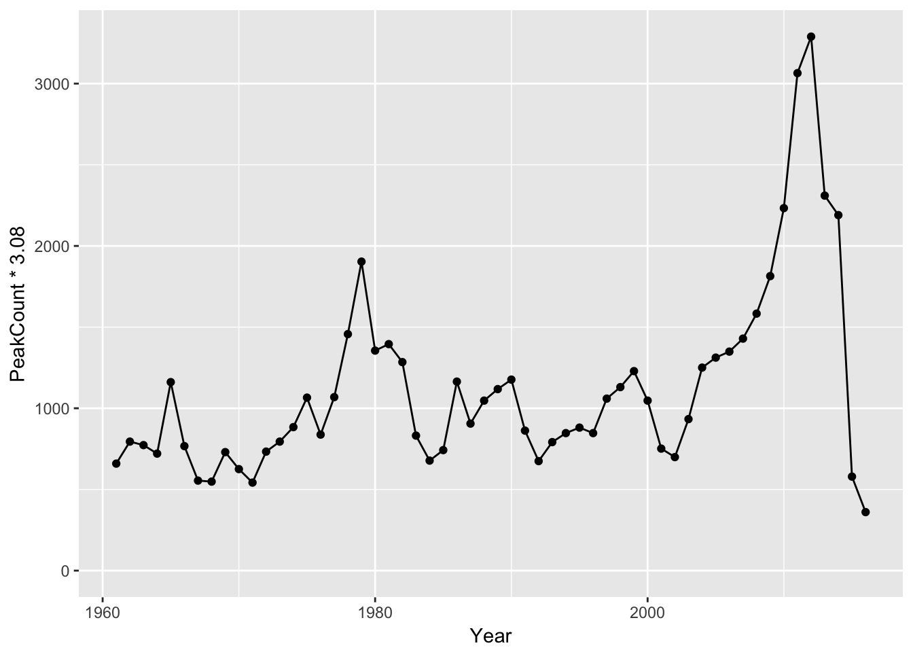

kootlake is an R package of annual Rainbow Trout, Bull Trout and Kokanee datasets for Kootenay Lake. The data is provided by the Ministry of Forests, Lands and Natural Resources Operations, British Columbia.
It includes the kl_estimate_na() function to estimate missing variable values from a predictor using a linear model. By default it estimates missing Bull Trout redd counts for Kaslo Creek using the resistivity counter counts.
Demonstration
library(ggplot2)
ggplot(data = kootlake::gerrard, aes(x = Year, y = PeakCount * 3.08)) +
geom_line() +
geom_point() +
expand_limits(y = 0)
Installation
kootlake is available from GitHub
# install.packages("devtools")
devtools::install_github("poissonconsulting/kootlake")Citation
To cite package 'kootlake' in publications use:
Jeff Burrows, Matt Neufeld, Greg Andrusak, Eva Schindler and Joe
Thorley (2018). kootlake: Kootenay Lake Data. R package version
0.2.7.9005. https://github.com/poissonconsulting/kootlake
A BibTeX entry for LaTeX users is
@Manual{,
title = {kootlake: Kootenay Lake Data},
author = {Jeff Burrows and Matt Neufeld and Greg Andrusak and Eva Schindler and Joe Thorley},
year = {2018},
note = {R package version 0.2.7.9005},
url = {https://github.com/poissonconsulting/kootlake},
}Contribution
Please report any issues.
Pull requests are always welcome.
Please note that this project is released with a Contributor Code of Conduct. By participating in this project you agree to abide by its terms.